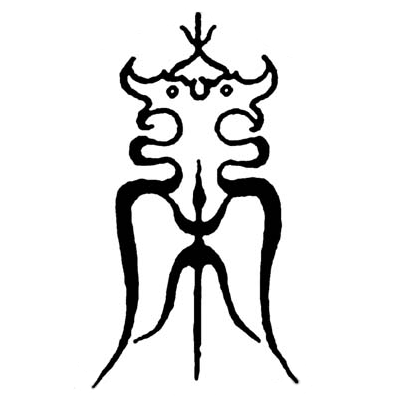

宋氏族谱
据文史资料及考古发现，早在殷商时期就有子宋、宋伯等受封于古“宋”邑（今宋子城附近），宋氏也随之孕育而生。
殷商之后，微子启受封于宋（今河南商丘），承续殷祀。春秋宋国的发展壮大，将宋氏的影响遍及整个殷商故地。
五代末，赵匡胤受周禅称帝，因其所任归德军节度使的藩镇治所在宋州（今河南商丘），故定国号为“宋”。两宋三百余年的国祚，让宋氏的影响力进一步扩大。
纵观数千年历史长河，从殷商古宋邑到春秋宋国、乃至后来的宋朝，许许多多与之相关的族群，因各种缘由融入宋氏，从而形成了多源的宋氏大家庭。而不管源自何方，历代宋氏族人都赓续家族文脉，将宋氏文化代代传承、发扬光大。
天码输入法
天码输入法是纯形码方案，可以简单、高效地输入包括汉字扩展集在内的汉字全集。
字根表形：字根按外形特征与英文字母象形对应，形象易记。如“可”字拆分成“丁”和“口”，而“丁”对应“T”，“口”对应“O”，输入“TO”就可以打出“可”字。“命”字拆分成“亼”、“口”和“卩”，输入“AOP”即可打出“命”字。无需大量字根练习即可入门，从电脑切换到手机场景也能很快适应。
拆分规范：汉字拆分遵循预定的拆分规则推导而成，力求简明、规范、无歧义，尽可能减少人为因素的干扰，避免因各人拆分习惯不同而带来拆分歧义。
低重高效：全码的重码率相对较低，GB2312集的重码为465个，非首选的选重为238个，按汉字字频计算的动态选重率不超过1‰，可以与其他常规形码方案相媲美。而对于Unicode十万汉字全集范围，绝大多数码位的候选项个数均在十选重以内。
魔方的奥秘
自从1974年匈牙利雕塑家、建筑学家鲁比克教授（Rubik Ernő）发明魔方之后，这种益智玩具便风靡全球，获得广大男女老少的喜爱，经久不衰。
一般来说，只要经过一番摸索，就完全可以自己还原出一面来。但是想要还原整个魔方，还是需要一定技巧的。大多数情况下，往往要依靠一些魔方公式。
你是否还在为记住这些魔方公式而苦恼呢？在尝试了形形色色的魔方公式之后，你是否觉得缺少点什么？你是否在纠结只能看到这些动作组合所产生的结果，却不知道公式中的每一步都是在干什么？
其实还原魔方并非一定要依赖那些枯燥难懂的公式，完全可以靠自己的智慧去还原整个魔方。“缺角层先法”将让你摆脱那些复杂公式的束缚，重新找回提孩时那种移动小方块的乐趣。